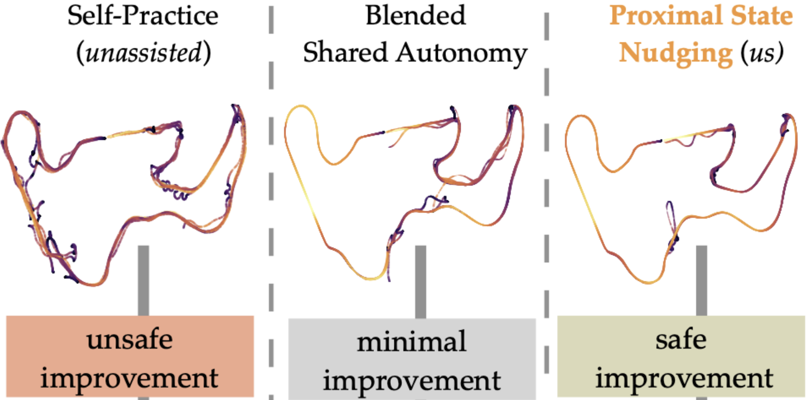
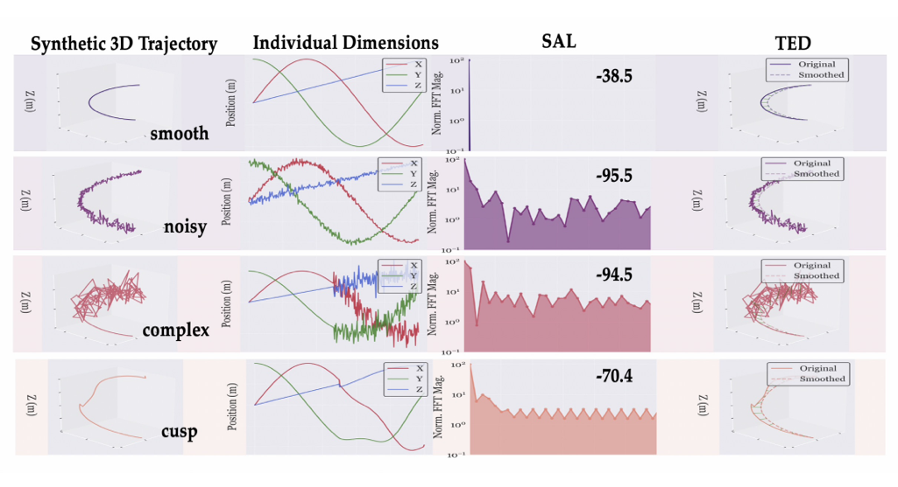

2026


Learning from the Best: Smoothness-Driven Metrics for Data Quality in Imitation Learning
In Submission, April 2026
DiSCo: Diffusion Sequence Copilots for Shared Autonomy
ACM/IEEE International Conference on Human-Robot Interaction (HRI), 2026
2025
TRACE: Textual Reasoning for Affordance Coordinate Extraction
ICCV 2025 Knowledge-Intensive Multimodal Reasoning Workshop, Nov 2025
paper codeCasper: Inferring Diverse Intents for Assistive Teleoperation with Vision Language Models
Conference on Robot Learning (CoRL), September 2025
GraphPad: Inference-Time 3D Scene Graph Updates for Embodied Question Answering
CVPR Workshop on 3D-LLM/VLA: Bridging Language, Vision and Action in 3D Environments, June 2025
paperSAMJAM: Zero-Shot Video Scene Graph Generation for Egocentric Kitchen Videos
Computer Vision and Pattern Recognition Conference (CVPR) MetaFood Workshop, June 2025
paperShared Autonomy for Proximal Teaching
ACM/IEEE International Conference on Human-Robot Interaction (HRI), Mar 2025
paper codeHow to Train Your Robots? The Impact of Demonstration Modality on Imitation Learning
Proceedings of the International Conference on Robotics and Automation (ICRA), May 2025
paper2024
FlowRetrieval: Flow-Guided Data Retrieval for Few-Shot Imitation Learning
Conference on Robot Learning (CoRL), November 2024
Distilling and Retrieving Generalizable Knowledge for Robot Manipulation via Language Corrections
International Conference on Robotics and Automation (ICRA), May 2024
Open X-Embodiment: Robotic Learning Datasets and RT-X Models
International Conference on Robotics and Automation (ICRA), May 2024
2023
Data Quality in Imitation Learning
Conference on Neural Information Processing Systems (NeurIPS), December 2023
paperHYDRA: Hybrid Robot Actions for Imitation Learning
Conference on Robot Learning (CoRL), November 2023
Gesture-Informed Robot Assistance via Foundation Model
Conference on Robot Learning (CoRL), November 2023
Masked Imitation Learning: Discovering Environment-Invariant Modalities in Multimodal Demonstrations
IEEE/RSJ International Conference on Intelligent Robots and Systems (IROS), October 2023
"No, to the Right" – Online Language Corrections for Robotic Manipulation via Shared Autonomy
Proceedings of the 2023 ACM/IEEE International Conference on Human-Robot Interaction (HRI), March 2023
2022
Can Foundation Models Perform Zero-Shot Task Specification For Robot Manipulation?
Learning for Dynamics & Control Conference (L4DC), June 2022
2021
Understanding the Relationship between Interactions and Outcomes in Human-in-the-Loop Machine Learning
Proceedings of the Thirtieth International Joint Conference on Artificial Intelligence (IJCAI), August 2021
paper2020
The EMPATHIC Framework for Task Learning from Implicit Human Feedback
Conference on Robot Learning (CoRL), November 2020
2019
Uncertainty-Aware Data Aggregation for Deep Imitation Learning
International Conference on Robotics and Automation (ICRA), May 2019
paperRisk-Aware Active Inverse Reinforcement Learning
Conference on Robot Learning (CoRL), November 2020
paper2018
Active Reward Learning from Critiques
International Conference on Robotics and Automation (ICRA), May 2018
paper